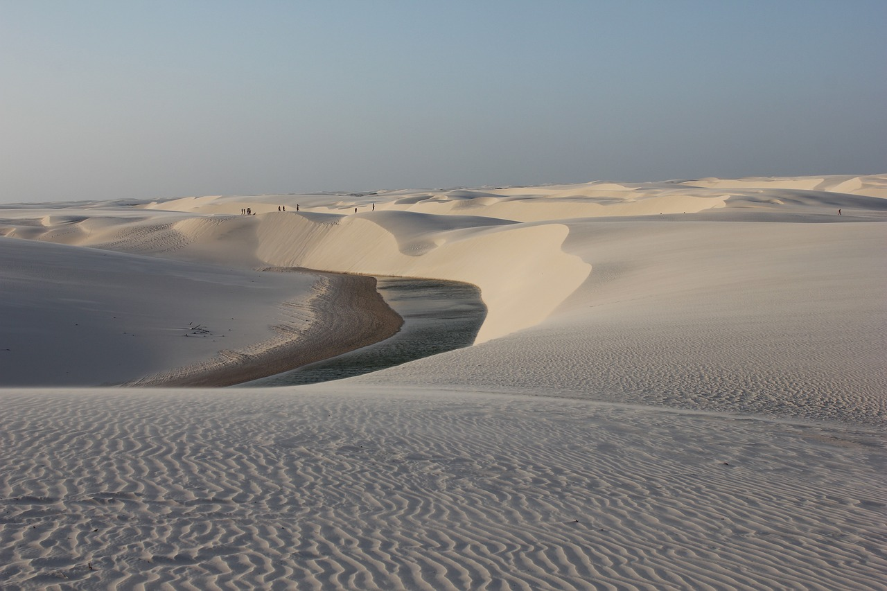
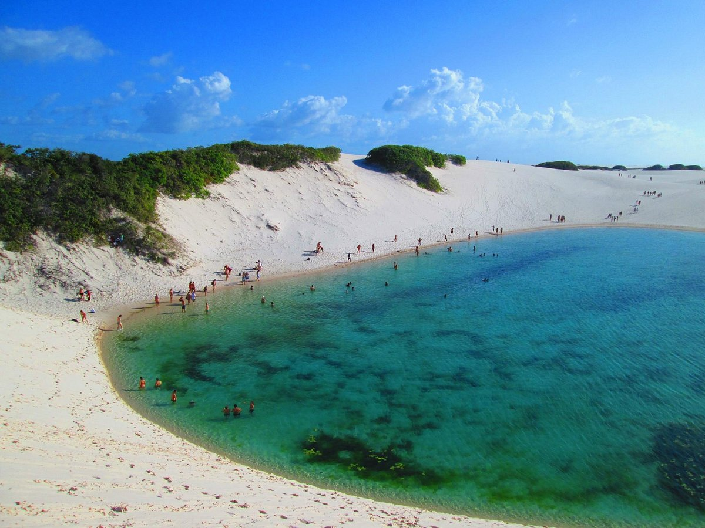

Roteiro para 8 dias
Conheça Leçóis Maranhenses Home
- 1o dia -Saída do GIG, às 11h; chegada no SLZ, às 16h45. Destino: São Luís. Hospedagem e jantar no local.
- 2o dia - São Luís. Saída às 10h em transfer privado, com destino à Santo Amaro. Já em Santo Amaro, almoçamos e saímos em transfer privativo para as Lagoas (isso, à tarde). Este passeio tem duração de 3h .
- 3o dia - Santo Amaro. Circuito de Bethânia das 9h às 18h.
- 4o dia - Santo Amaro. Lagoa das Emendadas. Passeio de 5h em transfer privativo. Retornando à Santo Amaro, descansamos e saímos para jantar.
- 5o dia - Saída pela manhã com destino a Atins pelo Rio Preguiçoso. Passeio nas Lagoas ou Praia de Atins.
- 6o dia - Atins. Passeio nas Lagoas ou Praia de Atins.
- 7o dia - Saída pela manhã com destino a Barreirinhas. Em Barreirinhas, realizamos sobrevoo e circuito das Lagoas. Retorno à São Luís, no final da tarde. Em São Luís, hospedagem próxima ao aeroporto (SLZ) para o voo que sai às 4/5h da manhã.
- 8o. dia- Chegada no RJ pelo GIG ou STD.

Hóteis do Roteiro de 8 dias
| Nome do Hotel |
Tipo do quarto |
Alimentação |
Valor da diária |
|
Dados de Março 2023
|
| Hotel Brisamar |
Suite Dupla |
Café da Manhã |
R$500 |
| Hotel Jundaia/td>
| Suite Dupla |
Café da Manhã |
R$400 |
| Hotel Chalé Murici |
Suite Dupla |
Café da Manhã |
R$300 |

Voltar a Home